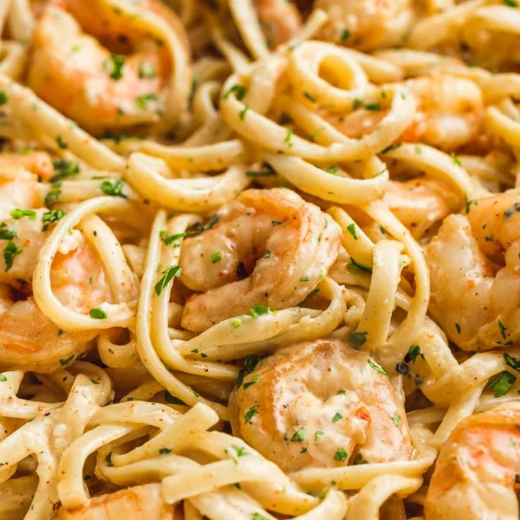

Creamy Shrimp Pasta
Ingredients:
- 1 lb shrimp, peeled and deveined
- 1 lb fettuccine pasta
- 3 cloves garlic
- 1 cup heavy cream
Instructions:
- Bring a large pot of salted water to a boil. Cook pasta according to package directions until al dente.
- In a skillet, cook shrimp and garlic in olive oil just until pink.
- Reduce heat to low and stir in heavy cream. Simmer for 5 minutes.
- Drain pasta and toss with creamy shrimp sauce. Garnish with parsley and parmesan.